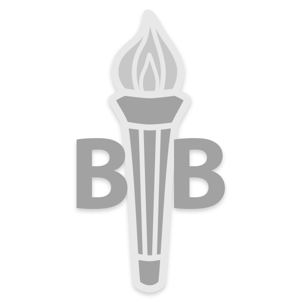
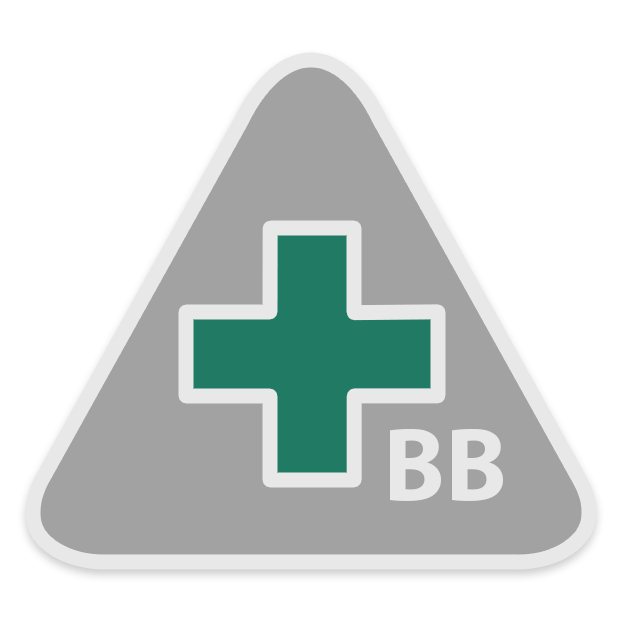
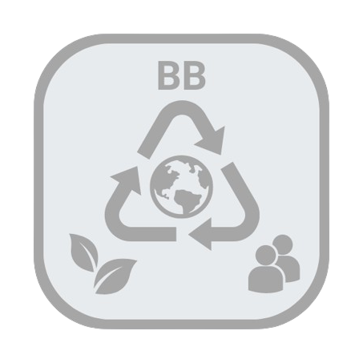

4. Group C - Community

Citizenship

Community Service

Environmental Conservation

First Aid

Safety

Social Entrepreneurship

MANAGEMENT APP



Members should attend a course of at least covering a period of 3 months on one of the following topics:
Either individually or in a group, make a further detailed study on the above topics. The study must cover the following areas:
Members are to complete the following tasks:
Research on Cyber Safety for young people and present on:
Any other topics deems appropriate by the Officer/Instructor.
Member individually or Members in a group of up to ten individuals within a Company undertakes a project contributing to a Sustainable Development Goal (SDG). The project has to:
To be awarded this badge, the member(s) must:
In a group of a minimum of two members and up to twenty members from at least two different Companies, undertake a project contributing to a Sustainable Development Goal (SDG). The project has to:
To be awarded this badge, the member(s) must:
Social Entrepreneurship
Requirements
■ Basic Level
Individual member participates in an entrepreneurship project with a social enterprise. Upon completion of the project, the Member(s) will need to present on the summary of the project highlighting:
Alternatively, a research study can done on a project done by a social enterprise outside of Malaysia and presents on the summary with similar points as above.
■ Advanced Level
Members individually or in a group of up to five individuals to propose, plan and execute a 3 months entrepreneurship project that positively impacts a local community.
The business project idea has to be approved by the Company Officer before commencement. Upon completion of the project, the Member(s) will need to present the outcome of the project highlighting: